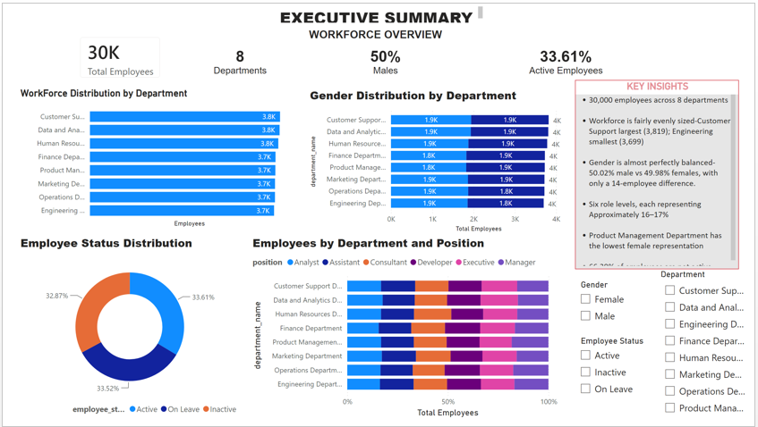
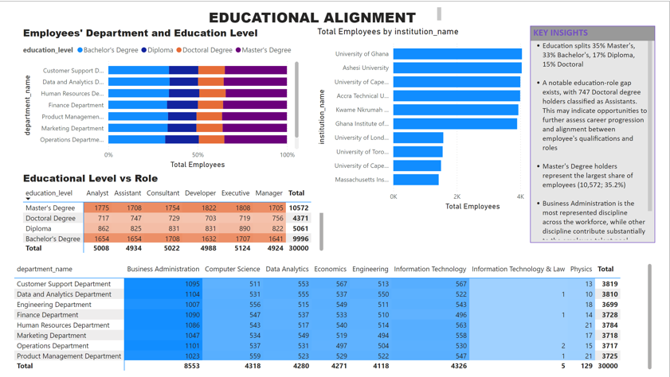
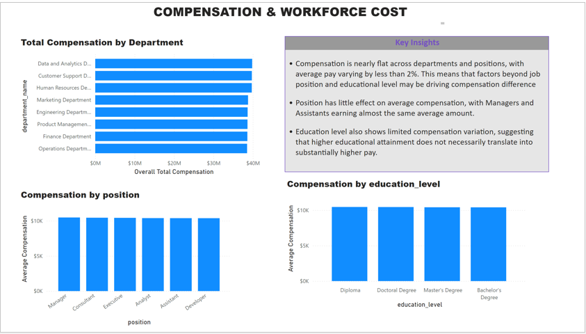
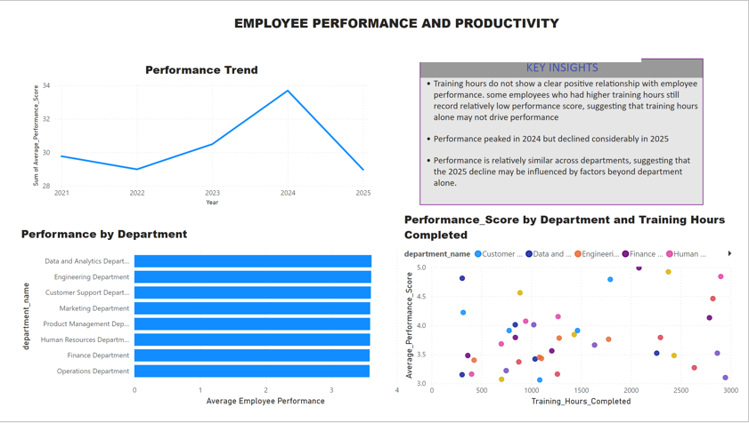

I combine over six years of customer and operations experience with practical data analytics to understand business problems, uncover trends and turn data into clear insights that support better decisions.
I bring practical business experience together with data analytics to understand not only what the numbers say, but why they matter.
I am a customer and relationship management professional with over six years of experience managing customer portfolios, monitoring account performance and supporting business operations.
I am transitioning into data analytics with hands-on experience using Excel, SQL, Power BI and Python to clean data, explore trends, build dashboards and communicate insights.
My business background helps me approach analytics from a practical perspective — starting with the business question, understanding the data and turning findings into useful information for decision-making.
My toolkit covers data preparation, analysis, querying, visualisation and business reporting.
Dashboard development, data visualisation, KPIs, Power Query and business reporting.
Data cleaning, formulas, pivot tables, validation, reporting and exploratory analysis.
Data querying, transformation, exploration and validation for practical analytical projects.
A workforce analytics project combining multiple datasets to understand workforce structure, compensation, education, employee wellbeing and performance.




I integrated employee, department, education, finance, health and performance data to explore workforce trends and identify relationships between employee characteristics and organizational performance.
Business question: How do workforce characteristics, compensation, education and employee wellbeing relate to organizational performance?
I use a structured analytical process to keep my work accurate, clear and connected to the original business problem.
Understand the business question, objectives and decisions the analysis needs to support.
Collect, inspect, clean and validate the data before analysis.
Identify patterns, trends and relationships that answer the business question.
Present findings through clear dashboards, reports and practical recommendations.
My experience in customer relationship management and operations gives me practical insight into how businesses use information to monitor performance and solve problems.
I combine analytical thinking with practical business experience, problem solving and communication.
Over six years of experience working with customers, accounts and business operations.
Ability to turn business questions into structured analysis and meaningful insights.
Experience identifying issues, investigating causes and supporting practical solutions.
Ability to explain information clearly to customers, colleagues and internal stakeholders.
I am open to opportunities in Data Analytics, Business Intelligence, Business Analysis, Reporting, Operations and Customer Analytics.
If you are looking for someone who understands both business operations and data, I would be happy to connect.